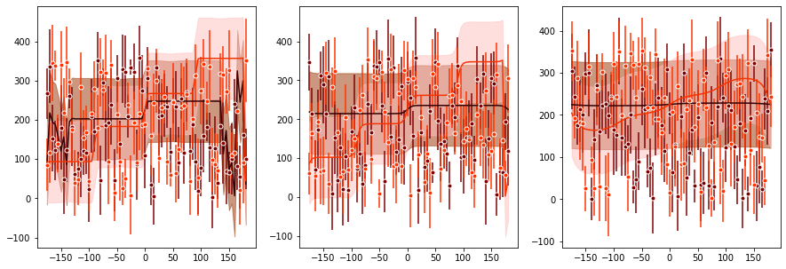

Simulate stochastic choices¶
author: steeve laquitaine
This tutorial simulates the stochastic choices made by a standard Bayesian model.
Setup¶
[3]:
# go to the project's root path
import os
os.chdir("..")
[4]:
# import dependencies
from bsfit.nodes.models.bayes import StandardBayes
from bsfit.nodes.dataEng import (
simulate_task_conditions,
)
import pandas as pd
%load_ext autoreload
%autoreload 2
The autoreload extension is already loaded. To reload it, use:
%reload_ext autoreload
Set the parameters¶
[11]:
# set the parameters
SUBJECT = "sub01"
PRIOR_SHAPE = "vonMisesPrior"
PRIOR_MODE = 225
OBJ_FUN = "maxLLH"
READOUT = "map"
PRIOR_NOISE = [80, 40] # e.g., prior's std
STIM_NOISE = [0.33, 0.66, 1.0]
SIM_P = {
"k_llh": [2.7, 10.7, 33],
"k_prior": [2.7, 33],
"k_card": [1],
"prior_tail": [0],
"p_rand": [0],
"k_m": [2000],
}
GRANULARITY = "trial"
CENTERING = True
N_REPEATS=5
Simulate task conditions (design matrix)¶
[7]:
# simulate task conditions
conditions = simulate_task_conditions(
stim_noise=STIM_NOISE,
prior_mode=PRIOR_MODE,
prior_noise=PRIOR_NOISE,
prior_shape=PRIOR_SHAPE,
)
The task conditions are shown below.
[8]:
conditions
[8]:
| stim_mean | stim_std | prior_mode | prior_std | prior_shape | |
|---|---|---|---|---|---|
| 0 | 5 | 0.33 | 225 | 80 | vonMisesPrior |
| 1 | 10 | 0.33 | 225 | 80 | vonMisesPrior |
| 2 | 15 | 0.33 | 225 | 80 | vonMisesPrior |
| 3 | 20 | 0.33 | 225 | 80 | vonMisesPrior |
| 4 | 25 | 0.33 | 225 | 80 | vonMisesPrior |
| ... | ... | ... | ... | ... | ... |
| 67 | 340 | 1.00 | 225 | 40 | vonMisesPrior |
| 68 | 345 | 1.00 | 225 | 40 | vonMisesPrior |
| 69 | 350 | 1.00 | 225 | 40 | vonMisesPrior |
| 70 | 355 | 1.00 | 225 | 40 | vonMisesPrior |
| 71 | 360 | 1.00 | 225 | 40 | vonMisesPrior |
432 rows × 5 columns
Simulate stochastic choices¶
[12]:
# instantiate the model
model = StandardBayes(
prior_shape=PRIOR_SHAPE,
prior_mode=PRIOR_MODE,
readout=READOUT
)
# simulate trial predictions
output = model.simulate(
dataset=conditions,
sim_p=SIM_P,
granularity=GRANULARITY,
centering=CENTERING,
n_repeats=N_REPEATS
)
Running simulation ...
-logl:nan, aic:nan, kl:[ 2.7 10.7 33. ], kp:[ 2.7 33. ], kc:[1.], pt:0.00, pr:0.00, km:2000.00
The simulated dataset is shown below.
[13]:
output["dataset"]
[13]:
| stim_mean | stim_std | prior_mode | prior_std | prior_shape | estimate | |
|---|---|---|---|---|---|---|
| 0 | 5 | 0.33 | 225 | 80.0 | vonMisesPrior | 3 |
| 1 | 5 | 0.33 | 225 | 80.0 | vonMisesPrior | 9 |
| 2 | 5 | 0.33 | 225 | 80.0 | vonMisesPrior | 15 |
| 3 | 5 | 0.33 | 225 | 80.0 | vonMisesPrior | 5 |
| 4 | 5 | 0.33 | 225 | 80.0 | vonMisesPrior | 9 |
| ... | ... | ... | ... | ... | ... | ... |
| 2155 | 360 | 1.00 | 225 | 40.0 | vonMisesPrior | 223 |
| 2156 | 360 | 1.00 | 225 | 40.0 | vonMisesPrior | 229 |
| 2157 | 360 | 1.00 | 225 | 40.0 | vonMisesPrior | 223 |
| 2158 | 360 | 1.00 | 225 | 40.0 | vonMisesPrior | 228 |
| 2159 | 360 | 1.00 | 225 | 40.0 | vonMisesPrior | 228 |
2160 rows × 6 columns
Calculate estimate choice statistics¶
[14]:
# simulate predictions
from matplotlib import pyplot as plt
plt.figure(figsize=(15,5))
model = model.simulate(
dataset=output["dataset"],
sim_p=SIM_P,
granularity="mean",
centering=CENTERING,
)
Running simulation ...
Calculating predictions ...
-logl:47038.38, aic:94094.75, kl:[ 2.7 10.7 33. ], kp:[ 2.7 33. ], kc:[1.], pt:0.00, pr:0.00, km:2000.00

An preview of the unique 431 combinations of task conditions (prior noise, stimulus noise, stimulus feature) are shown below:
[15]:
pd.DataFrame(output["conditions"]).head()
[15]:
| 0 | 1 | 2 | |
|---|---|---|---|
| 0 | 80.0 | 0.33 | 5.0 |
| 1 | 80.0 | 0.33 | 10.0 |
| 2 | 80.0 | 0.33 | 15.0 |
| 3 | 80.0 | 0.33 | 20.0 |
| 4 | 80.0 | 0.33 | 25.0 |
Model’s estimate generative probability density: the probability that the model generates each estimate is shown below, with the estimates ranging from 0 to 359 in the rows and each unique 431 combinations (prior noise, stimulus noise, stimulus feature) in the columns:
[16]:
pd.DataFrame(output["PestimateGivenModel"]).head()
[16]:
| 0 | 1 | 2 | 3 | 4 | 5 | 6 | 7 | 8 | 9 | ... | 422 | 423 | 424 | 425 | 426 | 427 | 428 | 429 | 430 | 431 | |
|---|---|---|---|---|---|---|---|---|---|---|---|---|---|---|---|---|---|---|---|---|---|
| 0 | 0.039645 | 0.033255 | 0.021730 | 0.011097 | 0.004451 | 0.001412 | 0.000358 | 0.000073 | 0.000012 | 0.000002 | ... | 9.999889e-320 | 2.852656e-18 | 9.999889e-320 | 9.999889e-320 | 9.999889e-320 | 2.312965e-19 | 2.852656e-18 | 9.999889e-320 | 4.240435e-19 | 4.625929e-19 |
| 1 | 0.039845 | 0.035143 | 0.024135 | 0.012943 | 0.005446 | 0.001810 | 0.000479 | 0.000102 | 0.000018 | 0.000003 | ... | 2.235866e-18 | 2.621360e-18 | 9.999889e-320 | 9.999889e-320 | 1.195032e-18 | 3.854941e-20 | 9.999889e-320 | 9.999889e-320 | 1.850372e-18 | 7.324388e-19 |
| 2 | 0.039645 | 0.036767 | 0.026542 | 0.014951 | 0.006600 | 0.002298 | 0.000636 | 0.000141 | 0.000025 | 0.000004 | ... | 9.999889e-320 | 1.888921e-18 | 9.999889e-320 | 8.480870e-19 | 1.272131e-18 | 2.052756e-18 | 9.999889e-320 | 9.999889e-320 | 9.999889e-320 | 3.180326e-18 |
| 3 | 0.039052 | 0.038083 | 0.028900 | 0.017102 | 0.007924 | 0.002891 | 0.000837 | 0.000194 | 0.000036 | 0.000006 | ... | 8.866364e-19 | 1.002285e-17 | 2.852656e-18 | 9.999889e-320 | 9.999889e-320 | 1.927471e-19 | 9.999889e-320 | 4.471732e-18 | 9.999889e-320 | 9.999889e-320 |
| 4 | 0.038083 | 0.039052 | 0.031156 | 0.019373 | 0.009422 | 0.003604 | 0.001092 | 0.000265 | 0.000052 | 0.000008 | ... | 9.406056e-18 | 9.999889e-320 | 9.999889e-320 | 1.696174e-18 | 9.999889e-320 | 4.625929e-18 | 9.999889e-320 | 7.709882e-19 | 9.999889e-320 | 9.999889e-320 |
5 rows × 432 columns
Here is a list of the attributes generated by the simulation:
[17]:
list(output.keys())
[17]:
['PestimateGivenModel',
'map',
'conditions',
'prediction_mean',
'prediction_std',
'dataset']
Tutorial complete !